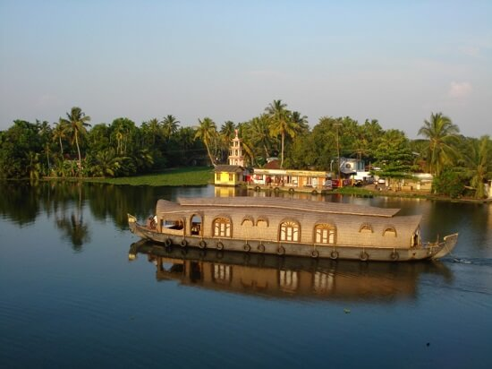
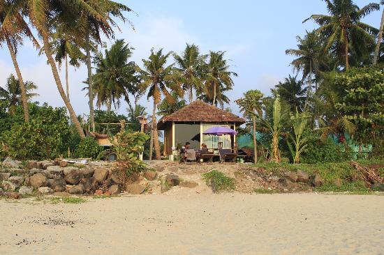
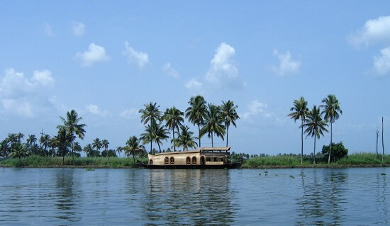

Alappuzha
Affectionately nicknamed the 'Venice of the East' by travellers from across the world, Alappuzha is a district of immense natural beauty. Embraced by the Arabian Sea in the west and a network of lakes, lagoons and freshwater rivers criss-crossing it, this backwater country is home toa vibrant animal and avian life. By virtue of its proximity to the sea, the town has always carved out an exclusive place for itself in the maritime history of Kerala. Renowned for its boat races, beaches, marine products and coir industry, the singularity of this land is the region called Kuttanad. A land of lush paddy fields referred to as the 'Rice Bowl of Kerala', it is one of the few places in the world where farming is done below sea level. This once prosperous trading and fishing centre is nowadays a world renowned backwater tourist destination.

Places to visit
Mandala Beach House and Resorts

The cosy Mandala Cottage comprises one bedroom and can sleep up to three guests. This property is ideal for use as a therapeutic gateway because it is located amidst greeneries paddy fields and bordered by palm trees, bamboo, and banana trees. Customers are offered food that is both nourishing to the body and satisfying to the palate, creating an experience that is hard to forget. A large selection of food is available, ranging from the traditional cuisine of Kerala to dishes from other parts of the world. Everything is carried out with extreme caution while preserving hygiene and cleanliness. The fruits and vegetables sold here have not been treated with any chemicals. There are many different types of games available to play, including chessboard, playing poker, caroms, and Pallankuzhi.
Mary's Forane Church

St. Mary's Church, which can trace its roots back to 835 A.D., is a well-known destination among deeply spiritual people. The location is well-known for the many religious gatherings that occur throughout the year, regardless of the season. The church has become a destination of pilgrimage for people from all over the world in the modern era. This is the location you should go to if you have a spiritual nature and are interested in learning more about the way of life and traditions practised by Christians. The church is also well-known for organising the most important feasts and festivals throughout the year, particularly in March. St. Sebastian's Feast is a well-known celebration in the church during March when you will be in Alappuzha. The festival is distinguished by the mesmerising effects of fireworks, which are accompanied by an abundance of vibrant colours and a wide variety of people. The incredible decorations, the magnificent appearance of the site, and the lavish feast make this location one of the city's most desirable places.
Vembanad Lake

This particular lake is not only the biggest but also the longest of those that can be found in Kerala. When it comes to enjoying backwater tourism in Alappuzha, one of the greatest spots is Vembanad Lake. Vembanad lake, located in the middle of Kerala, is surrounded by mangrove and coconut tree forests. The Vembanad Lake is the largest lake and the only one that never stops flowing since it is fed by a network of smaller lakes that all flow into it at some point. However, the fact that the massive area is so long is not what draws travellers to the location in the first place. Throughout the annual Onam festival, this lake is the sole venue for the world-famous boat race during the celebration. This is the ideal location to spend quality time with your family while enjoying some delicious fresh seafood. Boating on Vembanad Lake and spending the night on a houseboat, there is a one-of-a-kind experience that ranks high on the list of recommended activities for visitors to the Alappuzha region. This is one of the most well-liked places to spend a holiday in all of Kerala.